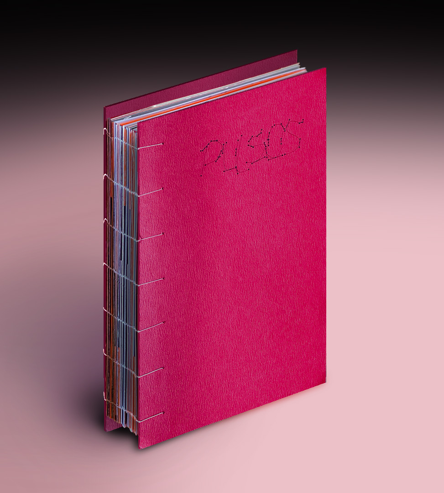

SOMA: Soporte Material

Una muestra de objetos de diseño argentino que explora las diferentes transformaciones de la materia al vincularse con el cuerpo.
Jaguar: Un musical del Centro de Arte UTDT

Proyecto de identidad visual para Jaguar, una obra musical impulsada por el Departamento de Arte de la Universidad Torcuato Di Tella.
Ronda Redonda: Re-diseño de la exposición de arte “Aprendizaje Infinito” expuesta en el Museo Moderno

Una muestra que explora el vínculo entre la educación y el arte, desde el Museo Moderno hacia el Centro Cultural Recoleta.
INTELI-GENTE: Exposición sobre el vínculo con tecnología en el MARQ

Exposición de tecnología que reflexiona sobre la relación entre usuarios y dispositivos, entendidos como sistemas que se entrelazan y se transforman mutuamente.
Pulsos: Una exploración sobre las convergencias entre arte y diseño

Desarrollo de editorial con curaduría de imágenes y obras de profesionales del arte y el diseño.
Militante de la forma: Un documental sobre Elisa Strada

Video documental sobre el poder de transformación social de la imagen, el color y la forma. Entre FADU y Di Tella.
¿VES EL RUIDO?: Un recorrido sensorial por la ciudad de Buenos Aires

Proyecto que visibiliza patrones de ruido y silencio en el espacio urbano. Un recorrido consciente por la Comuna 13, que enmarca hitos audio/visuales.
El cuerpo híbrido: Un paseo virtual

Experiencia interactiva que se pregunta por la despersonalización y fragmentación de los cuerpos hoy. Inteligencia artificial y la construcción de la imagen de un cuerpo.
Primitivo: sonido solo para quienes quieran conocer su verdadero ser

Diseño de identidad para un proyecto de sonido experimental.